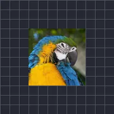

Oscillazione

Ruota il livello avanti e indietro tra due angoli.
Dondola fa andare avanti e indietro un livello tra Angolo 1 e Angolo 2, Frequenza volte al secondo. Usa Onda per scegliere Sinusoidale (morbida) o Triangolare (velocità costante), e Fase per sfasare i livelli tra loro.
Impostazioni
| Impostazione | Tipo | Intervallo | Predefinito |
|---|---|---|---|
| Frequenza | Numero | Da 0.1 Hz a 16 Hz | 2 Hz |
| Angolo 1 | Angolo | Da -3600° a 3600° | -30° |
| Angolo 2 | Angolo | Da -3600° a 3600° | 30° |
| Fase | Numero | Da 0 a 2 | 0 |
| Onda | Scelta | Sinusoidale, Triangolare | Sinusoidale |